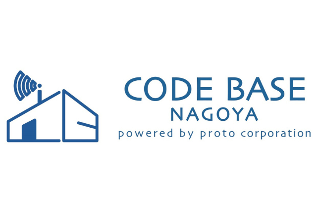

大同特殊鋼は素材の力で様々な産業を支える世界最大級の特殊鋼専業メーカーです。
熱に強い、サビにくいなど様々な機能を持つ特殊鋼は、ボールペンの先から、スマホ、パソコン、自動車、航空機など皆さんの身近なところで活躍しています。
TEDの目的や精神には当社の経営理念に通じるものがあり、主催・運営を担う学生やスピーカーの皆さんの熱意に賛同して２０１５年から協賛を続けてきました。
大同特殊鋼はTEDxNagoyaUの熱意を応援します。
ホームページはこちら
ネオレックスは、名古屋のITベンチャーです。 人を幸せにするIT企業、マネされる会社になることを目指し、自社企画・自社開発の製品を提供しています。 大企業向けクラウド勤怠管理システムでは、8年連続で国内トップシェア。「日本でいちばん大切にしたい会社」受賞企業。 名大出身者も多く在籍するネオレックスは、TEDxNagoyaUの理念・テーマに共感し、皆様の活動を応援しています。

CODE BASE NAGOYAは、「名古屋をギガ・シティに」という目的のもと株式会社プロトコーポレーションが開設した、ベンチャー企業やＩＴエンジニア、学生が無料で利用できる交流スペースです。 これからITスキルを身に付けたい方やすでにエンジニアとして活動されている方が集い、イノベーションを生み出せるような場所として、IT系コミュニティさん主催のワークショップのほか学生向けの無料プログラミング教室等を開催しています。 ホームページはこちら

タイガージャイロスコープは、日本の町工場の技術力で作り上げた精巧なメカニズム＋ハイクオリティの、オモチャの域を超えた新機軸のジャイロスコープ「地球ジャイロ」を手がけています。 Our Product: Japanese-made Gyroscope "Chikyu Gyro
私達キャリアラボbyNEXTRAは、「すべての人の挑戦が実現する社会」を目指し、やりたいことを見つけ、仲間と共に実現していけるコミュニティを運営しております。進路について困ったときは気軽にご相談ください！
ホームページはこちら

1909年の創業以来、エネルギー事業を基盤として、建設土木・住まい・不動産・輸入車販売・物流・システム開発・保険など、
街や暮らしに関わるさまざまな事業を展開してきました。ＳＡＬＡ(サーラ：生活空間をより美しく快適に）をコンセプトに、愛知県東部や静岡県西部を中心に地域密着型のサービスを提供しています。
今後もお客さまの生活に不可欠な商品・サービスをグループで創造・提供し、新たな１００年を目指します。
ホームページはこちら
胎児から超高齢者までの脳を研究し、「脳をいくつになっても成長させる」ための健康脳医療事業を行っている会社です。脳の健康に役立つ研究結果や情報を産地直送型の脳情報として発信し普及に努め、人それぞれが脳の正しい知見をベースにした人生観や文化を創造することを目指しています。
ホームページはこちら
日本特殊陶業は、独自のセラミック技術で自動車用、情報通信用等、社会になくてはならない様々な製品を作ってきた会社です。現在では「セラミックスのその先へ、想像のその先へ」のビジョンを掲げ、社会的課題を解決する為の事業創出に本気で取り組んでいます。
"VUCA"が叫ばれるこれからの時代、我々は何を意識して生き、働いていくべきでしょうか？TEDx NagoyaUに関わる皆さんのアイデアを聞かせて下さい！
会社ウェブサイト
ベンチャーラボウェブサイト
ベンチャーラボFacebook

2019年に南山大学の学生により立ち上げられた学生ベンチャー企業です。 課題解決型インターンシップのコーディネート事業を通じて、学生のキャリアデザインや成長を支援しております。 学生の成長を後押しすることはもちろん、若者の活力や豊かな発想を活かすことで企業の活性化や地域貢献につなげる取り組みも行っています。 好生館プロジェクトはTEDxを始め、学生や若者のチャレンジを応援しています。
「企業に良い人材を、人々にやりがいのある仕事を」。 私たちは採用における広告・戦略の就職コンサルティング情報会社として、あらゆる採用課題に挑戦し、問題解決を行います。ミスマッチのない【確かな絆】をプロデュースするというミッションのもと、企業・大学・学生3者の【真実の声】に耳を傾け、“この世でたった一つ”オンリーワンビジネスを提案していきます。
“Drew your Mind”を企業理念に、すべての人が自分の考えを描き出せる社会の実現を目指します。
おもに大学・高校に対して世界基準のリーダーシップを教育プログラムとして導入する支援を行います。また、学校の「もったいない」をなくすべく教学・運営の支援業務を、企業に対して大学を活用した社会連携支援を行っています。
ホームページはこちら
Tongaliは、東海地区18大学によるアントレプレナー育成プラットフォームです。学部生・大学院生・ポストドクター・教職員・卒業生を対象に、次世代の起業家を育成・支援する多面的なプログラムを行っています。メンタリング、活動拠点の提供、活動資金の援助、起業に関する情報やノウハウを得るためのイベントの開催など多岐に亘り、起業家教育のみならず、準備から起業後の事業展開までをシームレスにサポートします！
ホームページはこちら

岐阜を拠点に、地域の中小企業の経営革新と担い手となる若者の人材育成を通じた地域活性に取り組むNPO。大学生と地域の魅力ある中小企業を繋げる実践型インターンシップ事業や、右腕人材に特化した就職採用支援事業、愛する地域と共感する事業で選ぶプロボノ・兼業マッチング事業「ふるさと兼業」を手掛ける。また、オンライン上で地域と社会と繋がることができるwebキャンパス「つながるキャンパス」を運営中。
https://gifist.net/
https://tsunacam.net/
https://furusatokengyo.jp/
1928年に名古屋市西区で創業した、今年94歳の菓子メーカーです。
今回ご協賛したぶどう糖95％ラムネ「スイッチONタブレット」を始め、「つぶグミ」「グリーン豆」「キシリクリスタル」「花のくちづけ」などをつくっています。
TEDxNagoyaUに関わる皆さんが、アイデアを生み出す時や広げていく時に、私たちのお菓子がお役に立てたら嬉しいです。
ホームページはこちら
私たちは「社会と人にやさしい“幸せ”を育む」をコンセプトに
スイーツを通してSDGsの応援や社会貢献活動に取り組んでおります。
例えば、売上の一部で寄付活動を行なっていますが、名古屋（大須）や東京（吉祥寺）の直営店では、その支援先もお客様に選んで頂いております。
やさしさとこだわりが詰まった「至福のカヌレ」は、工房でひとつひとつ丁寧に焼き上げ、外は香ばしく中はもっちりとした至福の食感と美味しさです。
ホームページはこちら
桝塚味噌のブランド名で親しまれている合資会社野田味噌商店です。 日頃、全国の大学生協食堂の「お味噌汁」や「月見みそかつ丼」で 大変お世話になっております。 また、社長 野田清衛は２０１６年TEDｘNagoyaUのｓｐｅａｋｅｒです。 弊社は地元に根ざした企業として地域の食文化を守り、醸造・発酵技術を 通して世界に食を伝え、天然醸造の味噌蔵として日本一の味噌屋を目指しております。 是非、一杯のお味噌汁から、心なごむ幸せな気分を感じていただけましたら幸いです。
弊社はバーチャル空間で活躍するエンターテイナーの創出、また彼らのクリエイターエコノミーを加速する機会の提供を行っている。（VTuber・Vライバーをプロデュースし、エンターテイナー・クリエイターとして成長し生きていけるようお仕事を作っている） TEDxの特徴である、「コミュニティが熱量を持って持続的に広がっていく」様子は非常に興味深く、感銘を受けて協賛に至りました。 TEDxNagoyaUに関わる皆さんを応援します。
外部環境が大きく変わる中、今、私共にも大きな変化が訪れています。会社のロゴである「柳に飛びつこうとするカエル」は「常に挑戦し続ける会社でありたい」という想いが込められています。例えば、地元の学生さん達と共同開発した商品の販売やマラソンの給食で商品提供したりと、これまでにない取組みも行っています。
今後も老舗という看板に胡坐をかくことなく、お客様に喜んで頂く為の活動に注力していきたいと考えております。
ホームページはこちら
質の高いITソリューション・ビジネスソリューションを提供し、21世紀の情報ネットワーク社会に貢献していきます。TEDxNagoyaUの主催・運営に関わる皆さんの熱意を我々は応援します。
ホームページはこちら
採用サイト